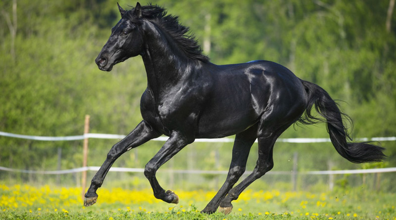

Horses
General informations
The horse (Equus ferus caballus)[2][3] is one of two extant subspecies of Equus ferus. It is an odd-toed ungulate mammal belonging to the taxonomic family Equidae. The horse has evolved over the past 45 to 55 million years from a small multi-toed creature, Eohippus, into the large, single-toed animal of today. Humans began domesticating horses around 4000 BC, and their domestication is believed to have been widespread by 3000 BC. Horses in the subspecies caballus are domesticated, although some domesticated populations live in the wild as feral horses. These feral populations are not true wild horses, as this term is used to describe horses that have never been domesticated, such as the endangered Przewalski's horse, a separate subspecies, and the only remaining true wild horse. There is an extensive, specialized vocabulary used to describe equine-related concepts, covering everything from anatomy to life stages, size, colors, markings, breeds, locomotion, and behavior

Horses are adapted to run, allowing them to quickly escape predators, possessing an excellent sense of balance and a strong fight-or-flight response. Related to this need to flee from predators in the wild is an unusual trait: horses are able to sleep both standing up and lying down, with younger horses tending to sleep significantly more than adults.[4] Female horses, called mares, carry their young for approximately 11 months, and a young horse, called a foal, can stand and run shortly following birth. Most domesticated horses begin training under a saddle or in a harness between the ages of two and four. They reach full adult development by age five, and have an average lifespan of between 25 and 30 years
Horse breeds are loosely divided into three categories based on general temperament: spirited "hot bloods" with speed and endurance; "cold bloods", such as draft horses and some ponies, suitable for slow, heavy work; and "warmbloods", developed from crosses between hot bloods and cold bloods, often focusing on creating breeds for specific riding purposes, particularly in Europe. There are more than 300 breeds of horse in the world today, developed for many different uses.
Horses and humans interact in a wide variety of sport competitions and non-competitive recreational pursuits, as well as in working activities such as police work, agriculture, entertainment, and therapy. Horses were historically used in warfare, from which a wide variety of riding and driving techniques developed, using many different styles of equipment and methods of control. Many products are derived from horses, including meat, milk, hide, hair, bone, and pharmaceuticals extracted from the urine of pregnant mares. Humans provide domesticated horses with food, water, and shelter, as well as attention from specialists such as veterinarians and farriers.
Lifespan and life stages
Depending on breed, management and environment, the modern domestic horse has a life expectancy of 25 to 30 years.[7] Uncommonly, a few animals live into their 40s and, occasionally, beyond.[8] The oldest verifiable record was "Old Billy", a 19th-century horse that lived to the age of 62.[7] In modern times, Sugar Puff, who had been listed in Guinness World Records as the world's oldest living pony, died in 2007 at age 56.[
Regardless of a horse or pony's actual birth date, for most competition purposes a year is added to its age each January 1 of each year in the Northern Hemisphere[7][10] and each August 1 in the Southern Hemisphere.[11] The exception is in endurance riding, where the minimum age to compete is based on the animal's actual calendar age.[1
Reproduction and development
Gestation lasts approximately 340 days, with an average range 320–370 days,[49] and usually results in one foal; twins are rare.[50] Horses are a precocial species, and foals are capable of standing and running within a short time following birth.[51] Foals are usually born in the spring. The estrous cycle of a mare occurs roughly every 19–22 days and occurs from early spring into autumn. Most mares enter an anestrus period during the winter and thus do not cycle in this period.[52] Foals are generally weaned from their mothers between four and six months of age
Horses, particularly colts, sometimes are physically capable of reproduction at about 18 months, but domesticated horses are rarely allowed to breed before the age of three, especially females.[54] Horses four years old are considered mature, although the skeleton normally continues to develop until the age of six; maturation also depends on the horse's size, breed, sex, and quality of care. Larger horses have larger bones; therefore, not only do the bones take longer to form bone tissue, but the epiphyseal plates are larger and take longer to convert from cartilage to bone. These plates convert after the other parts of the bones, and are crucial to development.
Depending on maturity, breed, and work expected, horses are usually put under saddle and trained to be ridden between the ages of two and four.[56] Although Thoroughbred race horses are put on the track as young as the age of two in some countries,[57] horses specifically bred for sports such as dressage are generally not put under saddle until they are three or four years old, because their bones and muscles are not solidly developed.[58] For endurance riding competition, horses are not deemed mature enough to compete until they are a full 60 calendar months (five years) old